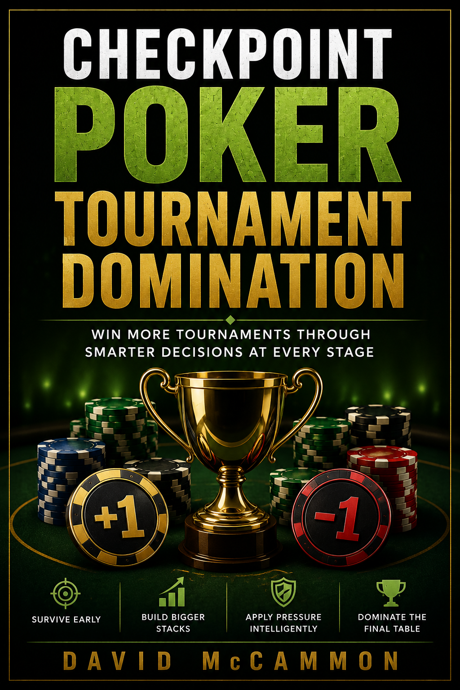
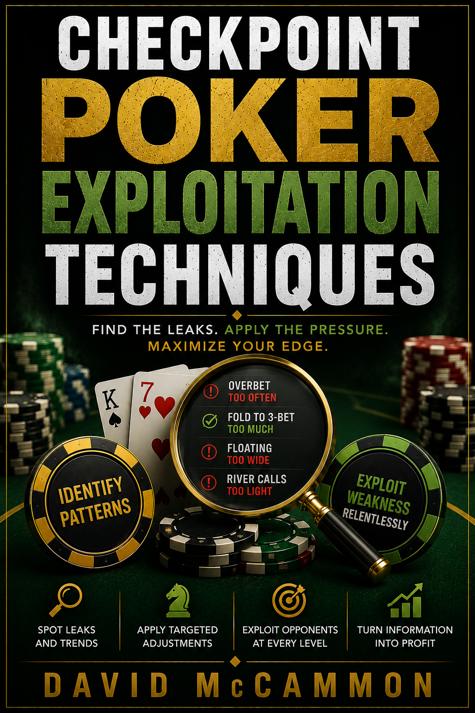

Most Poker Players Think Hand by Hand
Checkpoint Poker is built on a different idea. Poker is not won by one perfect hand. It is won by repeated decisions that move you forward or backward.
A plus-one decision improves your position. A minus-one decision damages your position. The goal is not to chase short-term results. The goal is to make better decisions at each checkpoint.

Start Here: Checkpoint Poker: The Core System
This is the foundation book. It teaches the Checkpoint Poker decision framework, the plus-one/minus-one system, and the mental structure behind the entire library.
If you are new to Checkpoint Poker, this is the first book to read. The other books build on this foundation by applying the system to specific parts of the game.
$19
View Book PageThe Checkpoint Poker 10-Book Library
Each book stands on its own. Start with the Core System, choose the area of your game that needs the most help, or get the complete collection.
Checkpoint Poker: The Core System
The foundation of the plus-one/minus-one decision framework.
$19
View Book
Tournament Domination
Apply checkpoints to survival, pressure, accumulation, and tournament stages.
$19
View Book
Cash Game Domination
Reduce leaks, choose better spots, and build steady cash-game decisions.
$19
View Book
Hand Reading Mastery
Read hands through betting patterns, pressure points, and decision paths.
$19
View Book
Bluffing Systems
Learn when pressure is plus-one and when bluffing is just chip destruction.
$19
View Book
Range Construction
Use ranges as decision tools instead of memorized charts disconnected from play.
$19
View Book
Exploitation Techniques
Find opponent weaknesses and turn them into repeatable plus-one advantages.
$19
View Book
AI Poker Thinking
Think in decision trees, pressure points, adjustments, and structured logic.
$19
View Book
Endgame Strategy
Make better late-stage decisions when pressure and payouts change everything.
$19
View Book
Bankroll Growth
Use checkpoint thinking to protect capital, manage risk, and grow seriously.
$19
View BookCheckpoint Poker Advanced Collection
Get all 10 Checkpoint Poker books in one collection.
Includes the Core System plus Tournament Domination, Cash Game Domination, Hand Reading Mastery, Bluffing Systems, Range Construction, Exploitation Techniques, AI Poker Thinking, Endgame Strategy, and Bankroll Growth.
Bought separately, the 10 books total $190. The complete collection is $97.
$97
View Collection PageWho This Is For
Checkpoint Poker is for players who are tired of guessing, chasing, tilting, and judging their game only by short-term results.
It is for players who want a clear decision framework they can carry into tournaments, cash games, hand reading, bluffing, bankroll decisions, and long-term improvement.